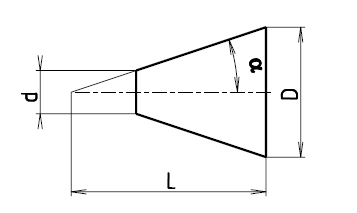

| 1. řada | 1 : 3 | 1 : 5 | 1 : 10 | 1 : 20 | 1 : 50 | 1 : 100 | 1 : 200 | 1 : 500 |
|---|---|---|---|---|---|---|---|---|
| 2α | 18°55'28,7" | 11°25'16,3" | 5°43'29,3" | 2°51'51,1" | 1°8'45,2" | 0°34'22,6" | 0°17'11,3" | 0°6'52,5" |
| α | 9°27'44,35" | 5°42'38,15" | 2°51'44,65" | 1°25'55,55" | 0°34'22,6" | 0°17'11,3" | 0°8'35,65" | 0°3'26,25" |
| 2. řada | 1 : 4 | 1 : 6 | 1 : 7 | 1 : 8 | 1 : 12 | 1 : 15 | 1 : 30 |
|---|---|---|---|---|---|---|---|
| 2α | 14°15'0,1" | 9°31'38,2" | 8°10'16,4" | 7°9'9,6" | 4°46'18,8" | 3°49'5,9" | 1°54'34,9" |
| α | 7°7'30,05" | 4°45'49,1" | 4°5'8,2" | 3°34'34,8" | 2°23'9,4" | 1°54'32,95" | 0°57'17,45" |
| Kuželovitosti | 1 : 0,288675 | 1 : 0,500000 | 1 : 0,651613 | 1 : 0,866025 | 1 : 1,207107 | 1 : 1,866025 |
|---|---|---|---|---|---|---|
| Vrcholový úhel kužele 2α | 120° | 90° | 75° | 60° | 45° | 30° |
| 1/2 vrcholového úhlu α | 60° | 45° | 37°30' | 30° | 22°30' | 15° |
| Označení kužele | MORSE 0 | MORSE 1 | MORSE 2 | MORSE 3 | MORSE 4 | MORSE 5 | MORSE 6 |
|---|---|---|---|---|---|---|---|
| Kuželovitost | 1 : 19,212 | 1 : 20,047 | 1 : 20,020 | 1 : 19,922 | 1 : 19,254 | 1 : 19,002 | 1 : 19,180 |
| Vrcholová úhel 2a | 2°58'54" | 2°51'26" | 2°51'40" | 2°52'32" | 2°58'30" | 3°0'52" | 2°59'10" |
| Velký průměr D, mm | 9,045 | 12,065 | 17,780 | 23,825 | 31,267 | 44,399 | 63,348 |
| Označení kužele | JACOBS N°0 | JACOBS N°1 | JACOBS N°2 | JACOBS N°3 | JACOBS N°6 | JACOBS N°33 | BROWN and SHARPE |
|---|---|---|---|---|---|---|---|
| Kuželovitost | 1 : 20,288 | 1 : 12,972 | 1 : 12,262 | 1 : 18,779 | 1 : 19,264 | 1 : 15,748 | 1 : 23,904 |
| Vrcholová úhel 2a | 2°49'24,7" | 4°24'53,1" | 4°40'11,6" | 3°3'1" | 2°58'24,8" | 3°38'13,4" | 2°23'47,5" |
| Kužel | Použití |
|---|---|
| 1 : 3 | Upevnění křižáků a pístů na pístnicích lodních a parních strojů. Vřetena brusek. |
| 1 : 3,333 | Vnitřní část věnce hvězdic kolejovách vozidel. Kuželové dutiny pro upůnání frézovacích hlav |
| 3,5 : 12 | Kuželové dutiny konců vřeten frézek. Kuželové stopky nástrojů. Frézovací trny. Redukční pouzdra. |
| 1 : 4 | Přední konce vřeten hrotovách a revolverovách soustruhů. |
| 1 : 5 | Konce brusnách vřeten. Kotouče třecích spojek. Patní čepy. |
| 1 : 7 | Kolové šrouby. |
| 1 : 10 | Kuželové konce hřídelů. Kulové čepy řízení. Stavitelná ložisková pouzdra. Upínací hroty. Trny a rozpínací pouzdra. |